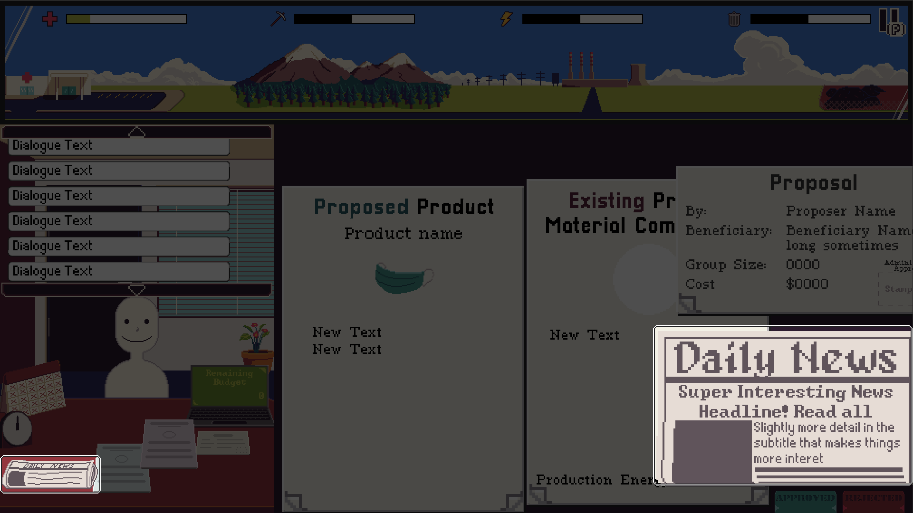
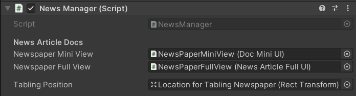

The News Manager

The News Manager is in charge of initializing documentUI elements like the Document Manager but only for the news. It also loads NewsItems from Proposals, which are presented to the player at a different time compared to proposal documents.
The News Manager follows a singleton pattern, meaning that only one instance should exist at any point in the game.

Much like the Document Manager, the news manager links the Newspaper Mini View and the Newspaper Full View together. Read the section about the DocumentUI system to learn more about it.
The Tabling Position is a marker for where the in-game newspaper should be placed when delivered to the player.
The News system
When the News Manager is tasked with presenting a news article, the NewsItem is loaded but not shown to the player. Only when the in-game time progresses and a day has passed, does the newspaper get presented to the player. That is, newspapers are only delivered on the start of the next in-game day. Any component in the game can call on the News Manager to load a NewsItem. However currently, only the GamePlayManager does that.
Warning
If the News Manager is called to load a NewsItem when there is already a NewsItem that has yet to be delivered, the older undelivered news will be overwritten and lost.